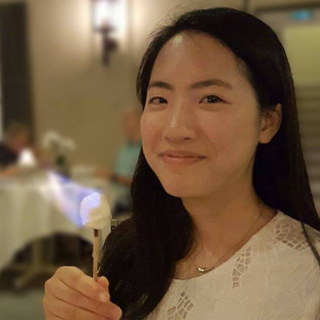
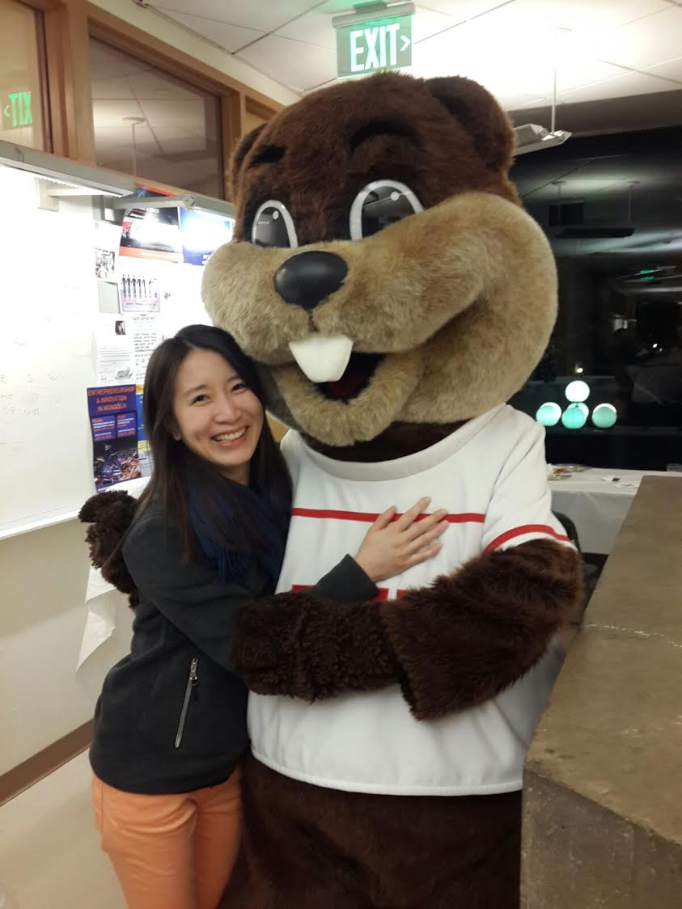

Officers
Wang Chi Cheung - Treasurer (2016 Spring - 2016 Summer, also 2014 Fall - 2015 Summer [Graduated])Due to the untimely resignation of our previous Treasurer, Wang Chi (a.k.a. Seven) Cheung volunteers to the rescue. With years of involvement in the Hong Kong Student Society, Seven is bringing his years of veteran experience to give a final boost to HKSS prior to his graduation in Summer of 2016.
Seven has taken the role of Treasurer once in the past in the year of 2014-2015. HKSS will rub off his prior success, and have a rich April cycle.
After his graduation, Seven will pursue is career in Singapore, where he will pay his dues to his sponsors for his highschool and undergraduate education by supplying his talented expertise.
Pertaining to what Seven's portrait is on this webpage, interested individuals should consult Seven on their own time.
Alice Wong - Treasurer (2015 Fall - 2016 March [Resigned])Born and raised in Hong Kong, Alice is brought up in a multi-culture city. While she values Chinese virtues most, her appreciation for other cultures is burgeoning. Having been on overseas trips to different contests, Alice enjoys learning about the difference between Hong Kong and other countries.
Hong Kong is where Alice’s heart belongs to. She believes there is unlimited potential in this city which await the exploration by curious individuals. As a fusion pot of the Eastern and Western cultures, Hong Kong is showered with many unique opportunities. If only they could be captured fully, the prosperity of Hong Kong would expand limitlessly. Therefore Alice has strong faith in the long-term development of the city.
As the Treasurer of HKSS, Alice plans to manage budget wisely to maximize the effectiveness of culture sharing to other students. She will also collaborate closely with Lawrence in event planning.
 Harriet Chiu - Event Coordinator - (2015 Fall - 2017 January [Resigned])Born and raised in Hong Kong, Harriet will always call the city her home. Having spent part of high school in the US, she misses the unique aspects of the city - the local delicacies and the fast-paced lifestyle. Harriet is a person who likes spending time outdoors. She will always be up for going on a hike, sailing in the ocean or skiing down a mountain.
As the activity coordinator of HKSS, she would be planning events in the hope of bringing people together to have a good time.
Harriet hopes become a mechanical engineer, and be involved in designing products that will make a difference in the world.
 Beatrice Soh - Event Coordinator - (2016 Spring - 2017 January [Resigned])Born in Singapore and raised in Hong Kong, Beatrice is often accused of being a fake Singaporean and a real Hong Konger at heart. Having spent most of her life in Hong Kong, Beatrice will always feel an emotional connection with the city.
Beatrice picked up Cantonese by watching countless Hong Kong dramas, but needs a lot more practice, especially after being away from Hong Kong for a few years. She loves talking to people about Hong Kong and spreading its unique east-meets-west culture. She particularly enjoys discussing the fine details of Hong Kong food.
Beatrice is currently pursuing her PhD in chemical engineering, and hopes to do big things in the future.
 Ze Dong (Jenny) - Treasurer (2016 Spring - 2017 January [Resigned])
Ze Dong (Jenny) - Treasurer (2016 Spring - 2017 January [Resigned])
Born in Mainland China and grew up in the US, Jenny had no direct contact with Hong Kong when she joined the HKSSMIT executive board as a Treasurer in Spring 2016. However, it didn't stop her from relentlessly contributing to HKSSMIT via organizing events and recruiting new members.
This summer, Jenny made her first visit to Hong Kong, and had positive impression of the city. This reconfirmed her goal to promote recognition of HKSSMIT and establish stronger ties between Hong Kong and Mainland student groups on campus.
Outside of HKSSMIT, Jenny plans to pursue a double major in Civil Engineering(course 1) and Business (course 15), hoping to combine qualitative skills with sociology knowledge to make a larger impact across different disciplines.